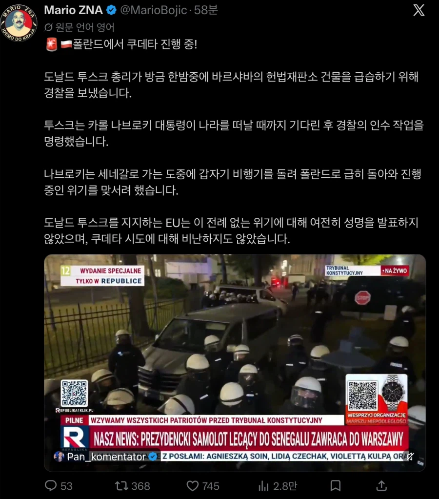

쿠테타 일어남

쿠테타 일어남
성공하면 혁명아입니까
성공해도 대통령 바꿀정도는 아니긴함
그냥 거대야당이 선출한 헌법재판관이랑 대통령이 선출한 헌법재판관이랑 우리가 진짜 헌법재판관이다 하는 상태
이원집정부제라 우리감성에서 이해하긴 힘든데 머
우리는 이쪽분야 글로벌 트렌트세터니까 이런걸로 쿠데타잖아 하기는 좀 가소롭지 아직은 ㅋㅋ
이거 맞지?
대립교황
ㅇㅇsns로 서로 이단으로 규정하고 본인 정통성주장중 ㅋㅋㅋㅋ
뭐 총리나 대통령이나 흑표 좋아해주는 분들이라 아무나 이겨도...
한국이 잘하는 트렌드!
?????
유럽에서 다시 쿠데타..?
에?
ㅋㅋㅋㅋㅋㅋㅋㅋㅋㅋㅋㅋ
쟤들은 테러는 안일으키는데 집안 뒤집어 엎는건 잘하네 ㅋㅋㅋㅋㅋㅋ
형제의 나라 맞네 ㅋㅋ
어 ㅋㅋㅋㅋㅋㅋ이거 ㅋㅋㅋ
헉
무기 대금은 지불 할거지? ㅋㅋ
총리랑 대통령이 막고라 ㄷㄷ
현직 수반 도날드에 의한 정부 건물급습... 이거 어디서 봤는데
우크라 옆나라 아녀?
이름앞자가 트럼프랑 비슷하네
우리는 k9 많이 사주는 사람 응원하면 되는거야?
글쓴놈 조현병 있냐?
니가 있는것 같은데
전세계 민주주의 슬슬 좆되가는 거 같으면 개추
되x 돼o
쿠데타도 아니고 헌법재판소를 경찰이 급습한 것도 아님.
의회가 임명한 재판관이 재판소에 진입하려는데 시위대가 둘러싸고 있어서 경찰이 호위하는 거임.
트위터 찌라시에 속지마라... 현시각 바르샤바는 평화롭다.
우린 이걸 헌정쿠데타라고 부르기로 했어요.
헌정쿠데타보다는 예송논쟁에 가깝지...
그리고 국민의 40%가 대통령이 잘못했다, 25%가 대통령이 잘못 없다고 생각하고 있는데, 이게 어떻게 총리에 의한 헌정쿠데타임?
바르샤바는 불타고있는가?
롤드컵 보면서 과자나 까먹고 있음 ㅋㅋ
쿠데타가 뭔지모름? 군대 ㅇㄷ?
쿠데타는 군사쿠데타 말고도 헌정,헌법 쿠데타라고 있어.
저것도 개도국에서 많이 발생하는 쿠데타의 한종류임.
EU에서 발생한게 좀 웃기지만
EU는 입꾹닫 하는게 코메디네
실패하면 반역, 성공하면 혁명 아입니꺼
EU가 시켰다는게 정설 ㅌㅋㅋㅋ
쿠데타까진 아니고 헌정위기정도